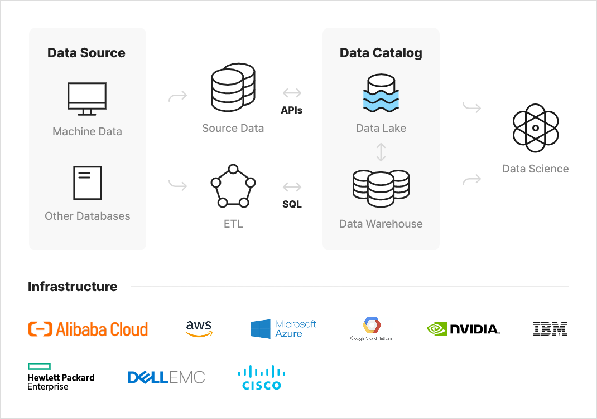
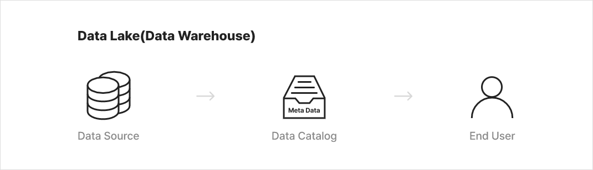

Big Data Platform
고객이 보유한 다양한 에코 시스템과의 원활하게 통합하여 데이터 보관, 유지, 운용 할 수 있는 솔루션 제공과 기술 지원하고, 손쉽게 데이터를 추적하고 분석하며 관리할 수 있도록 거버넌스를 제공합니다.
Big Data Process

Big Data Platform

- 데이터의 품질, 구조, 사용 및 통계에 대한 정보를 포함하는 데이터 저장소 생성
- 사용자가 실제 데이터와 함께 메타데이터에 액세스할 때 데이터에 대해 원격으로 공동 작업을 수행
- 데이터를 자동으로 자주 업데이트하여 데이터 저장 공간 전반에 걸쳐 데이터를 정확하고 일관되게 유지
- 데이터 계보에 액세스하고 소스, 수정 및 데이터 액세스와 같은 정보 보기
- 이해 관계자와 데이터 자산을 안전한 방식으로 공유